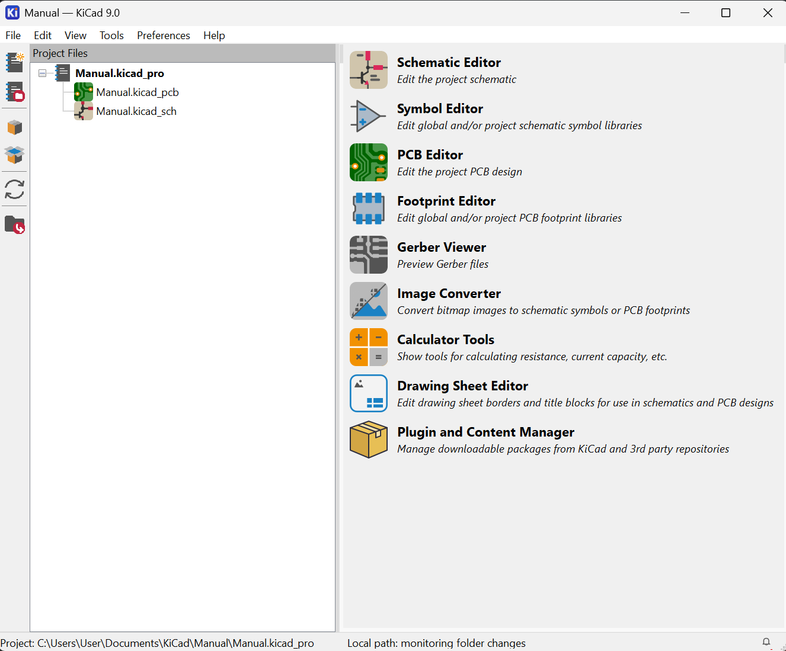

Instalación de KiCad
Esta sección describe cómo descargar e instalar KiCad en un equipo con Windows.
Descarga
- Ingresa al sitio oficial: https://www.kicad.org/download/
- Selecciona Windows.
- Descarga el instalador de la versión estable más reciente (
.exe).
Versión recomendada
En JW Control trabajamos con KiCad 9.0. Asegúrate de descargar esta versión para compatibilidad con los proyectos del equipo.
Instalación paso a paso
1. Ejecutar el instalador
Haz doble clic en el archivo .exe descargado. Si Windows Defender o el Control de Cuentas de Usuario (UAC) lo solicita, confirma con "Sí".
2. Pantalla de bienvenida
Haz clic en Next para continuar.
3. Licencia
Acepta los términos de la licencia GPLv3 y haz clic en Next.
4. Componentes a instalar
Se recomienda dejar la selección por defecto. Para un uso estándar en JW Control, asegúrate de incluir:
- [x] KiCad Application
- [x] Schematic Libraries
- [x] PCB Footprint Libraries
- [x] 3D Models (opcional, ocupa ~3 GB)
- [x] Documentation
Espacio en disco
Las librerías 3D son opcionales. Si el espacio es limitado, puedes omitirlas y agregarlas después.
5. Directorio de instalación
Deja la ruta predeterminada o cámbiala si lo prefieres:
6. Instalación
Haz clic en Install y espera a que se complete el proceso (puede tardar varios minutos).
7. Finalizar
Haz clic en Finish. KiCad aparecerá en el menú de inicio de Windows.
Primera ejecución
Al abrir KiCad por primera vez, verás el Project Manager:

Figura: Interfaz del Project Manager de KiCad- Panel izquierdo: árbol de archivos del proyecto (
.kicad_pro,.kicad_sch,.kicad_pcb). - Panel derecho: accesos directos a las herramientas: Schematic Editor, PCB Editor, Footprint Editor, etc.
Crear un nuevo proyecto
- Ve a
File → New Project...(Ctrl+N). - Elige una carpeta y asigna un nombre al proyecto.
- KiCad generará automáticamente los archivos base del proyecto.
Estructura de archivos
Cada proyecto de KiCad genera al menos tres archivos principales:
| Archivo | Descripción |
|---|---|
proyecto.kicad_pro |
Archivo de configuración del proyecto |
proyecto.kicad_sch |
Esquemático |
proyecto.kicad_pcb |
Diseño PCB |
Configuración inicial recomendada (JW Control)
Antes de comenzar a trabajar, realiza las siguientes configuraciones:
Idioma de la interfaz
Preferences → Preferences → Common → Language → Español (opcional, muchos usuarios prefieren el inglés por la documentación online).
Librerías del proyecto
Para proyectos compartidos en JW Control, usa las librerías estándar de KiCad más las librerías internas del equipo cuando estén disponibles.
Preferences → Manage Symbol Libraries — Verifica que las librerías estén cargadas correctamente.
Guardado automático
Preferences → Preferences → Common → Auto save interval — Se recomienda establecerlo en 5 minutos.
Atajos de teclado útiles en el Project Manager
| Atajo | Acción |
|---|---|
Ctrl+N |
Nuevo proyecto |
Ctrl+O |
Abrir proyecto |
Ctrl+Shift+S |
Guardar como |
Ctrl+Q |
Cerrar KiCad |